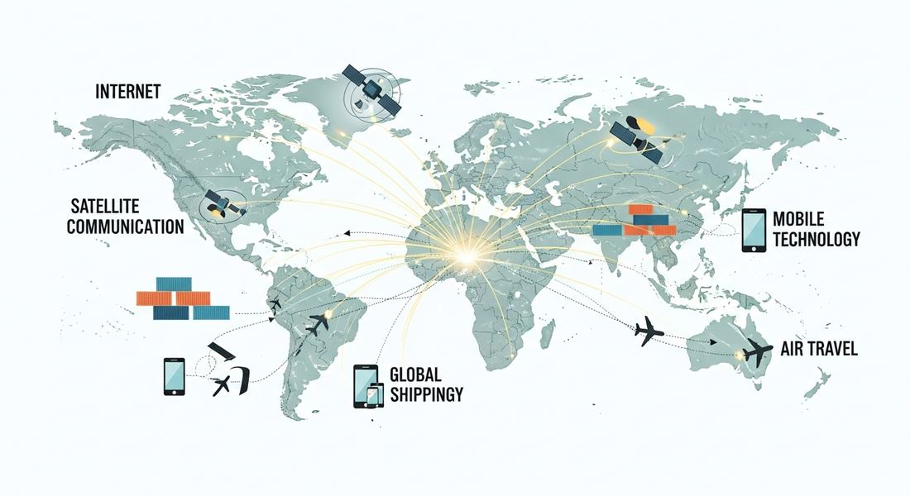

9.1 Advances in Technology and Exchange After 1900
- LO-A: Communication shrank the world: Radio, cellular phones, and the internet connected billions of people across vast distances. Air travel and shipping containers moved people and goods globally at unprecedented speed and scale. Geographic distance became far less of a barrier than ever before in human history. Energy and agriculture fed and powered growth: Petroleum and nuclear power drove industrial productivity. The Green Revolution, using fertilizers, pesticides, and high-yield seed varieties, dramatically increased food production and prevented mass famine as the global population soared past 8 billion. Medicine transformed life expectancy: Vaccines and antibiotics conquered diseases that had killed millions. Life expectancy roughly doubled worldwide over the 20th century. Birth control gave women unprecedented control over reproduction, reshaping family structures and women's roles globally. Technology had costs as well as benefits: The same technologies that raised living standards also increased environmental damage, enabled weapons of mass destruction, and deepened global inequality between those who had access to new technologies and those who did not.
Try each question before revealing the answer.
1. How did shipping containers transform global trade in the 20th century?
2. What was the Green Revolution and why was it controversial?
3. How did the birth control pill change women's roles in the 20th century?
4. How did nuclear technology represent both a benefit and a threat after 1945?
- Explain how the development of new technologies changed the world from 1900 to present, including communication and transportation, energy, birth control, agriculture, and medicine
Tap a term for its definition.
-
Definition: The transformation of global agriculture from the 1950s–1970s through high-yield crop varieties, synthetic fertilizers, pesticides, and irrigation. Significance: Dramatically increased food production and sustained a rapidly growing global population, but also raised environmental and equity concerns.
-
Definition: Standardized metal boxes used to transport goods by ship, truck, and train interchangeably. Significance: Reduced shipping costs by ~90%, making global supply chains economically viable and accelerating globalization.
-
Definition: A global network of interconnected computers enabling instant communication and information exchange. Significance: Transformed commerce, communication, politics, and culture, connecting billions across geographic boundaries.
-
Definition: A drug (like penicillin) that kills or inhibits the growth of bacteria. Significance: Transformed medicine by making previously fatal infections treatable, dramatically reducing mortality and extending life expectancy.
-
Definition: Methods of preventing pregnancy, most transformatively the contraceptive pill (1960). Significance: Gave women control over fertility, contributed to falling birth rates, and enabled women's expanded participation in education and the workforce.
-
Definition: Energy generated by nuclear fission, splitting atoms to create heat that drives turbines. Significance: Provided large-scale electricity generation without burning fossil fuels, raising industrial productivity; also created nuclear weapons of catastrophic destructive power.
📡 Communication and Transportation: Shrinking the World (KC-6.1.I.A)
The 20th century witnessed a series of technological revolutions that made geographic distance almost irrelevant to human communication and increasingly manageable for the movement of goods. The AP CED identifies this development precisely: "New modes of communication, including radio communication, cellular communication, and the internet, as well as transportation, including air travel and shipping containers, reduced the problem of geographic distance."
At the dawn of the 1900s, sending a message across the Atlantic took days by ship. By 1920, radio allowed voice to cross continents in real time. By 1970, satellites enabled live television broadcasts from the Moon. By 2000, email and the internet allowed instant text, image, and video sharing across the globe at essentially zero cost. By 2010, over 5 billion people owned cellular phones, more than had access to clean water or reliable electricity. This communications revolution fundamentally altered how humans conducted commerce, organized political movements, shared culture, and experienced daily life.

Image credit not specified.
AI-generated illustration (Google Gemini, 2025), commercially licensed.
Transportation underwent a parallel revolution. Air travel, which barely existed in 1903 (the Wright Brothers' first flight), became mass transit by the 1970s, connecting cities that once took weeks to travel between. International business, tourism, and migration all accelerated dramatically. Perhaps even more consequential was the shipping container. Before its standardization in the 1950s–60s, loading a cargo ship was slow, expensive manual labor. Containers, loaded and sealed at the factory, could move directly from ship to train to truck, slashing costs and enabling the global manufacturing supply chains that define the modern economy. A T-shirt might be designed in New York, sewn with cotton from India, made in Bangladesh, and sold in London, all affordably because of containerization.
⚡ Energy Technologies: Powering the Modern World (KC-6.1.I.D)
Behind every factory, city, and hospital of the modern world lies a revolution in energy. The CED notes that "energy technologies, including the use of petroleum and nuclear power, raised productivity and increased the production of material goods."
Petroleum became the lifeblood of the 20th-century economy. Internal combustion engines running on gasoline powered automobiles, trucks, and aircraft. Diesel engines drove shipping. Petroleum derivatives (plastics, synthetic fibers, fertilizers) transformed manufacturing, clothing, and agriculture. By 1970, the global economy was so dependent on oil that OPEC's 1973 oil embargo, cutting supply to the US and Western Europe, triggered the worst economic crisis since the Great Depression. The geography of oil (concentrated in the Middle East, Russia, and a few other regions) shaped Cold War alliances, wars, and environmental debates.
Nuclear power emerged after WWII as both a weapon of unprecedented destructive power and, in peaceful applications, a source of abundant electricity. France, the US, Japan, and the USSR all built nuclear power plants from the 1950s onward. Nuclear reactors generated electricity without burning fossil fuels, a major advantage. But accidents like Three Mile Island (1979) and Chernobyl (1986) raised public fears and slowed nuclear expansion in many countries.
🌾 Feeding 8 Billion: The Green Revolution (KC-6.1.I.B)
In 1900, the global population was about 1.6 billion. By 2024, it exceeded 8 billion. How did the planet feed this five-fold increase? The answer lies substantially in the Green Revolution, a dramatic transformation of agriculture that the CED describes as increasing "productivity and sustaining the earth's growing population as it spread chemically and genetically modified forms of agriculture."
The Green Revolution began in the 1940s–1950s with the work of agricultural scientists, most famously Norman Borlaug, who developed high-yield, disease-resistant wheat varieties. By the 1960s–70s, these techniques had spread to India, Pakistan, Mexico, and much of Asia. The combination of high-yield seeds, synthetic nitrogen fertilizers, pesticides, and expanded irrigation more than tripled crop yields in many regions. India, which faced serious famine threats in the 1960s, became self-sufficient in grain by the 1970s.
The Green Revolution also had critics. Small farmers often couldn't afford the necessary inputs (fertilizers, seeds, irrigation). Environmental damage accumulated, soil degradation, water table depletion, pesticide runoff. Traditional crop biodiversity was lost as monocultures replaced diverse farming. And by the late 20th century, commercial agriculture, dominated by large corporations using genetically modified organisms (GMOs), had transformed farming from a subsistence activity into a global industry.
💊 Medicine Transforms Life (KC-6.1.I.C)
No technological achievement of the 20th century saved more lives than advances in medicine. The CED notes that "medical innovations, including vaccines and antibiotics, increased the ability of humans to survive and live longer lives." Global life expectancy rose from roughly 31 years in 1900 to over 73 years by 2020, more than doubling in a single century.
Vaccines eradicated or controlled diseases that had killed millions throughout history. Smallpox, which had killed an estimated 300 million people in the 20th century alone, was completely eradicated worldwide by 1980, the first human disease ever eliminated. Polio, which had paralyzed hundreds of thousands annually, was eliminated from most of the world. Vaccines for measles, typhoid, yellow fever, and dozens of other diseases transformed childhood survival rates.
Antibiotics, beginning with penicillin (discovered by Alexander Fleming in 1928, mass-produced by the 1940s), made previously fatal bacterial infections treatable. Pneumonia, tuberculosis, syphilis, wound infections, diseases that had killed throughout human history, became manageable. Antibiotics also made surgery far safer, enabling medical procedures that had been impossibly risky before.
👩 Birth Control and Changing Demographics (KC-6.1.III.B)
The development of more effective birth control, particularly the contraceptive pill, approved in the United States in 1960, constituted a profound social revolution. The CED identifies this as a key development: "More effective forms of birth control gave women greater control over fertility, transformed reproductive practices, and contributed to declining rates of fertility in much of the world."
Before reliable contraception, women's lives were largely structured around frequent childbearing. Large families were the norm; women who wanted to limit family size had few reliable options. The pill changed this fundamentally. Women could plan pregnancies around education, careers, and personal goals. Fertility rates fell sharply across the industrialized world, and eventually across much of the developing world as well. By 2020, the global fertility rate had fallen to about 2.3 births per woman, barely above the replacement rate, compared to over 5 in 1950.
The social consequences were enormous. Women's workforce participation expanded dramatically. Marriage was delayed. The women's liberation movement of the 1960s–70s was substantially enabled by reproductive autonomy. And the demographic consequences, fewer workers supporting larger retired populations, created new economic and social challenges in the 21st century.
These videos will help you review Advances in Technology and Exchange After 1900 and solidify key concepts before your exam.
- It eliminated tariffs on goods traded between nations.
- It allowed governments to track and tax international trade more effectively.
- It dramatically reduced the cost and time of transporting goods globally, enabling international supply chains.
- It replaced air travel as the primary means of international transportation.
- a political movement demanding land redistribution to peasant farmers.
- the application of science and technology to dramatically increase agricultural productivity.
- an environmental campaign to reduce the use of chemical fertilizers.
- the spread of organic farming techniques from Western Europe to the developing world.
- declining rates of fertility in much of the world.
- the eradication of sexually transmitted diseases globally.
- increased government investment in healthcare.
- the elimination of gender discrimination in the workforce.
- improving the nutritional content of the global food supply.
- replacing traditional healing practices in developing nations.
- eliminating the effects of pollution and environmental toxins.
- reducing deaths from bacterial infections and preventing epidemic diseases.
- The development of nuclear power plants in France and the Soviet Union
- The creation of a global internet enabling instant communication across continents
- The spread of high-yield wheat varieties to South Asia during the Green Revolution
- The introduction of birth control pills reducing global fertility rates